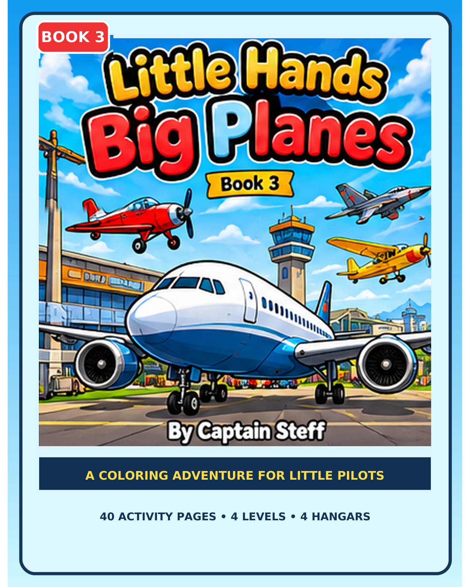
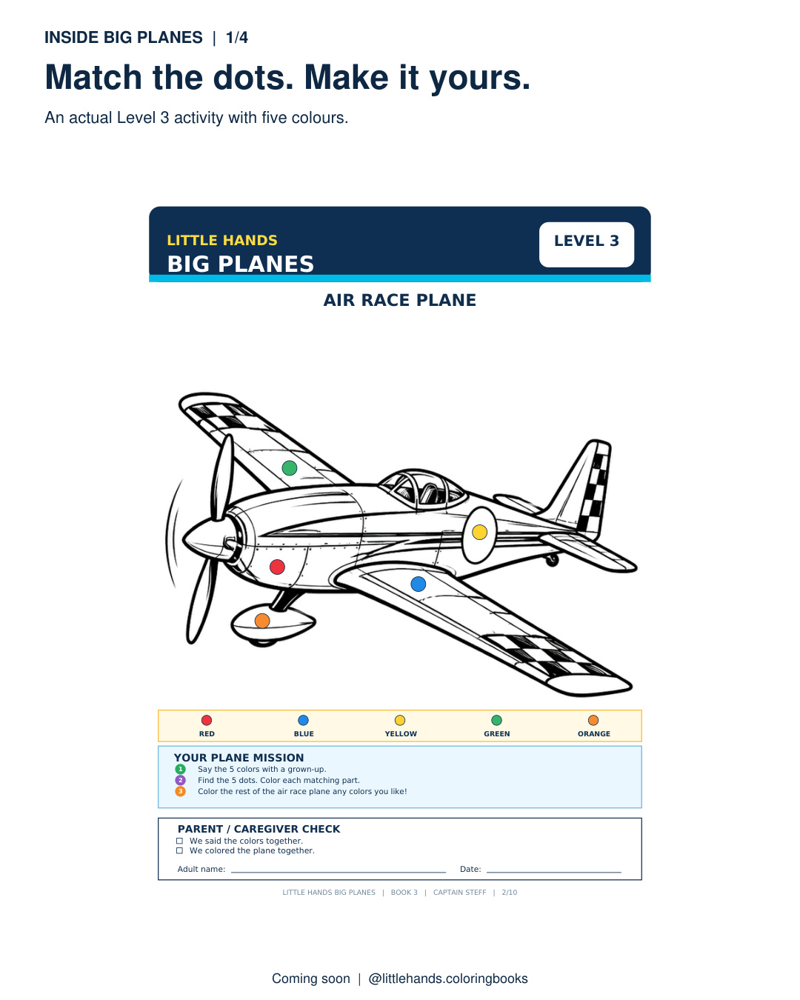
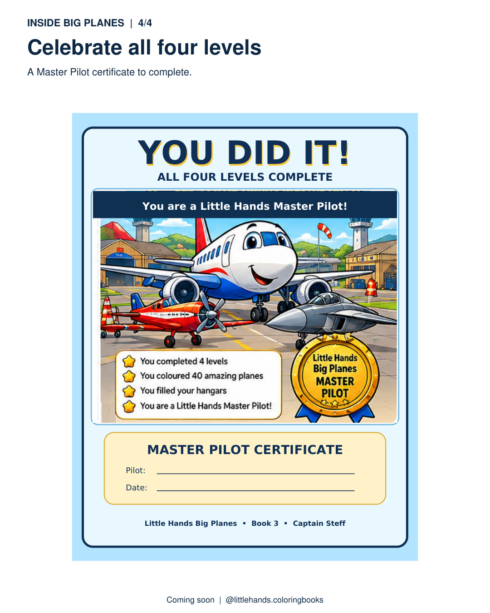

Little Hands Coloring Books · Captain Steff
Airplane and helicopter coloring activities
Little Hands Big Planes
For children interested in aircraft, flying machines, planes and helicopters, this paperback offers actual aircraft pictures across four levels with colour-dot cues.
Start with three coloured-dot cues in Level 1. Later levels offer four, five and six cues; children can choose their own colours for unmarked parts.
Hangar rewards celebrate each finished level, and the Master Pilot certificate marks completion of all four levels.
View current paperback on Amazon US
Paperback identifier: B0HPZVLV5T. Amazon controls price and availability.

Look inside: actual approved book artwork


Questions about this colouring book
How do the levels progress?
Each book moves from simpler three-cue activities toward more detailed activities with up to six colour clues.
What happens after a level?
Hangar rewards celebrate each finished level, and the Master Pilot certificate marks completion of all four levels.
Are these downloadable printable pages?
No. These are approved promotional previews of the paperback interior; the full book is sold by Amazon.